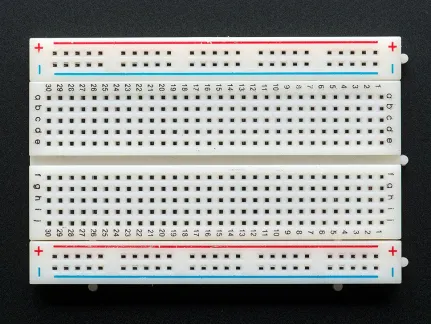
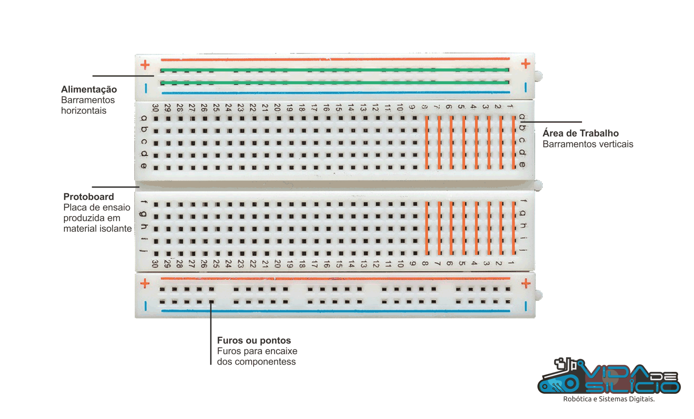

Dicas Gerais
Dicas úteis para o dia a dia¶
Dicas gerais para qualquer desafio:¶
Entenda o problema: Antes de começar a escrever o código, certifique-se de compreender o problema que você precisa resolver. Leia o enunciado do exercício com atenção e faça anotações, se necessário.Planeje antes de programar: Pense sobre a lógica do programa e como abordar o problema antes de escrever o código. Isso pode incluir a criação de um fluxograma, escrever um pseudocódigo ou listar os passos para resolver o problema.Divida e conquiste: Separe problemas maiores ou mais complexos em partes menores e mais gerenciáveis. Isso facilita a resolução do problema e a depuração do código.Comente seu código: Escreva comentários claros e concisos ao longo do seu código para explicar o que cada parte faz. Isso facilita a revisão e a compreensão do código, tanto para você quanto para os outros.Mantenha o código organizado: Use indentação e espaçamento consistentes para tornar seu código mais legível e fácil de entender.Nomeie variáveis e funções adequadamente: Escolha nomes significativos e descritivos para variáveis e funções, para que seja fácil identificar sua finalidade no código.Pratique a reutilização de código: Sempre que possível, reutilize partes do código que já foram escritas para resolver problemas semelhantes. Isso pode economizar tempo e esforço.Teste e depure: Teste seu código frequentemente para garantir que ele esteja funcionando corretamente e resolvendo o problema proposto.Aprenda com seus erros: Se você encontrar um erro ou dificuldade, tente entender o motivo e aprenda com ele. Isso ajudará a evitar cometer o mesmo erro no futuro.Peça ajuda quando necessário: Não hesite em buscar ajuda de colegas, ou comunidades online, como fóruns e grupos de discussão, se você estiver enfrentando dificuldades ou tiver dúvidas.
Hardware:¶
Protoboard¶

A protoboard é uma ferramenta essencial para montagem de circuitos eletrônicos de forma rápida, flexível e sem a necessidade de soldagem. Ela permite o desenvolvimento e teste de circuitos antes de sua implementação final. Abaixo, estão as principais características e boas práticas para uso eficiente da protoboard:
- Estrutura Interna: A protoboard possui trilhas de conexões horizontais e verticais, que facilitam a distribuição de sinais e alimentação elétrica. As trilhas centrais geralmente são divididas, permitindo a inserção de componentes de forma independente em cada lado.
- Uso Eficiente de Espaço: Organize os componentes de maneira lógica, utilizando as trilhas de alimentação para VCC e GND nas extremidades da protoboard, e distribuindo os componentes ativos e passivos nas áreas centrais.
- Manutenção da Integridade das Conexões: Certifique-se de que os fios de conexão (jumpers) estejam firmemente encaixados nas trilhas, para evitar mau contato e possíveis falhas no circuito.
- Utilização de Capacitores de Desacoplamento: Em projetos mais complexos, é recomendável a adição de capacitores de desacoplamento próximos aos CI's para estabilizar a alimentação e reduzir ruídos.

- Guia detalhado de utilização da protoboard: https://portal.vidadesilicio.com.br/protoboard/
Chaves e botoões¶
As chaves e botões são dispositivos de entrada essenciais em sistemas embarcados, proporcionando uma interface de controle direta e intuitiva. Eles desempenham um papel crucial em aplicações que exigem a interação do usuário com o hardware.
- Referência para você conhecer mais sobre chaves e botões: https://www.robocore.net/tutoriais/introducao-a-chaves-e-botoes
Leds¶

Os LEDs (Light Emitting Diodes) são componentes amplamente utilizados como indicadores visuais em circuitos eletrônicos. Eles são eficientes, confiáveis e oferecem uma resposta rápida. Abaixo estão algumas considerações importantes para o uso de LEDs em projetos de engenharia eletrônica:
- Cálculo de Resistor de Limitação: Para garantir a longevidade do LED e evitar danos, é essencial calcular corretamente o resistor de limitação de corrente. A fórmula básica é:
onde V_{fonte} é a tensão de alimentação, V_{LED} é a tensão de queda do LED, e I_{LED} é a corrente desejada. - Polarity Awareness: LEDs são componentes polarizados, o que significa que a corrente só pode fluir em uma direção (do anodo para o catodo). A inversão de polaridade pode resultar na não iluminação do LED ou até na sua danificação. - Uso em Circuitos Digitais: LEDs podem ser utilizados para indicar estados de sinal em circuitos digitais. Integrações com microcontroladores devem considerar o uso de transistores quando a corrente exigida exceder a capacidade da porta de saída. - Multiplexação e Controle de Intensidade: Em projetos com múltiplos LEDs, técnicas de multiplexação podem ser empregadas para economizar pinos de controle. Além disso, o PWM (Pulse Width Modulation) pode ser utilizado para controlar a intensidade luminosa.
- Referência para você conhecer mais sobre leds, resistor, circuitos.... aqui: https://www.makerhero.com/blog/aprenda-a-piscar-um-led-com-arduino/
Outros Sensores e Atuadores¶
Os sensores e atuadores são utilizados na interface entre o mundo físico e os sistemas eletrônicos. Eles permitem que um sistema embarcado detecte variáveis físicas e tome ações baseadas em leituras de sensores. Abaixo estão algumas considerações técnicas sobre o uso desses componentes:
- Tipos de Sensores: Sensores de temperatura, luminosidade, umidade, pressão, entre outros, devem ser escolhidos com base nas especificações do projeto. Considere fatores como precisão, intervalo de operação e resposta temporal.
- Interferência e Isolamento: Sensores que operam em ambientes com ruídos eletromagnéticos podem precisar de blindagem e filtragem adequada para garantir leituras precisas. Utilize capacitores e filtros passa-baixa quando necessário.
- Calibração de Sensores: A calibração regular dos sensores é essencial para manter a precisão das medições. Isso pode envolver a comparação com padrões conhecidos ou a aplicação de algoritmos de compensação.
-
Integração com Microcontroladores: Muitos sensores modernos utilizam interfaces digitais como I2C, SPI ou UART. É importante compreender o protocolo de comunicação e garantir que o microcontrolador tenha recursos suficientes para gerenciar múltiplos dispositivos simultaneamente.
-
Atuadores como servos, motores DC e relés podem ser controlados diretamente por microcontroladores ou através de circuitos de acionamento específicos para manipular cargas maiores.